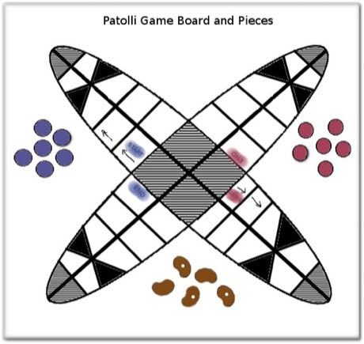

Throw five marked beans to move six pieces around an X-shaped track with trap squares; the aim is to bring all pieces round before your opponent.
Heritage note
Part of the living heritage of Mexico. Some forms of this practice carry deep meaning for the communities who keep it; here we describe the play and the craft only, with respect for its roots.
Origins
Usually placed in the era of Crossroads and Golden Ages (about 500 to 1500), although its exact origins are uncertain, within the cultural world of The Americas: Mesoamerica.
Play it
Sources


More from Mexico


Chinampa Gardens
Mexico · Crafts and making
Mesoamerican ballgame
Guatemala +1 · Street and playground games